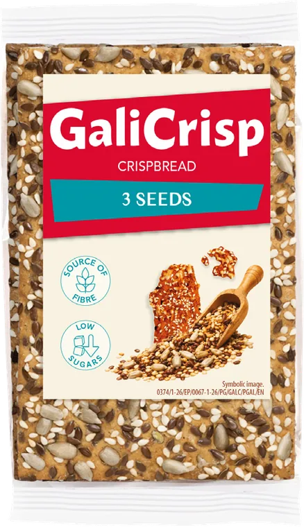
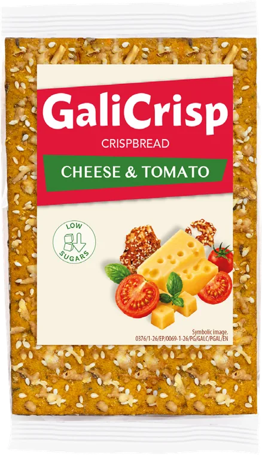
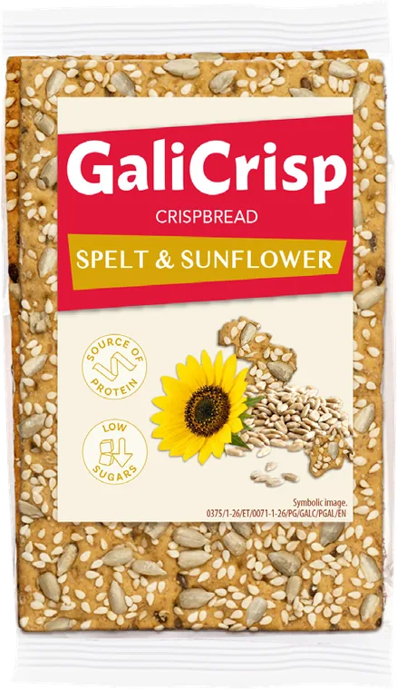
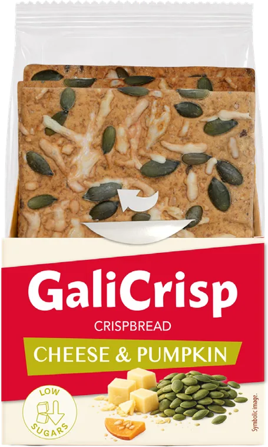
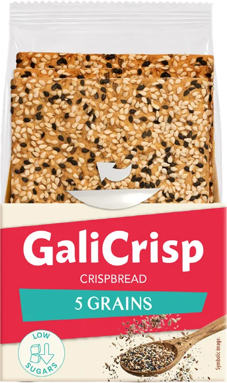
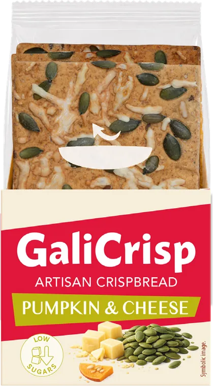
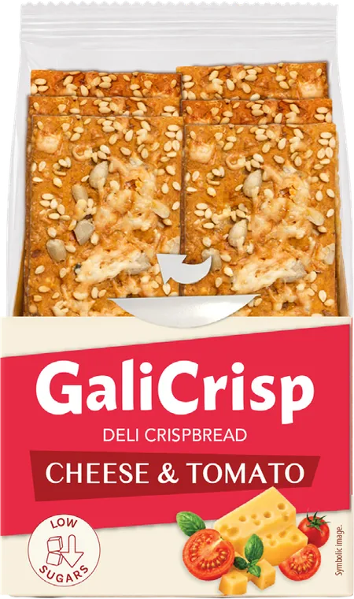
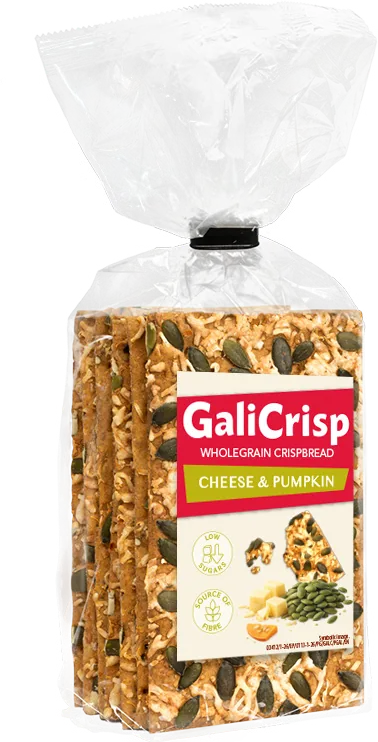

Crispbread: classic, protein and wholegrain
Six crispbread lines in 130 to 200 g packs, from the everyday seeded slice to Protein with up to 27 g of protein per 100 g.
Crispbread is our largest category and the heart of our Jeżowe bakery. Every line is built for a specific shelf: Classic 135 g and 180 g for everyday shopping, Artisan 130 g for the deli aisle, Deli 180 g with bold toppings for the cheese board, Wholegrain 200 g in a clear bag that shows the grain, and Protein 180 g for the growing high-protein category.
All lines are available under the GaliCrisp brand and as private label. We adapt flavour, weight, slice count and packaging to the retailer and the market. Logistics data for each line sits under the products, and the full specification comes with our offer.
Crispbread 135 g
Six generous slices, loaded with seeds, grains or real cheese and baked for an even, clean crunch. 6 slices

Cheese & Onion

Cheese & Tomato

Cheese & Pumpkin

Spelt & Sunflower
Logistics data
| Carton type | Carton size (W × H × L) | Units per carton | Cartons per layer | Layers per pallet | Cartons per pallet | Units per pallet | Pallet height | Shelf life |
|---|---|---|---|---|---|---|---|---|
| two-sided display | 196 × 167 × 292 mm | 10 | 16 | 10 | 160 | 1600 | 1.85 m | 360 days |
Crispbread 180 g
Our everyday crispbread in a larger stand-up pack. Eight slices for households that eat crispbread daily. 8 slices

3 Seeds

Cheese & Pumpkin

5 Grains

Spelt & Sunflower
Logistics data
| Carton type | Carton size (W × H × L) | Units per carton | Cartons per layer | Layers per pallet | Cartons per pallet | Units per pallet | Pallet height | Shelf life |
|---|---|---|---|---|---|---|---|---|
| two-sided display | 196 × 167 × 292 mm | 8 | 16 | 10 | 160 | 1280 | 1.85 m | 360 days |
Protein Crispbread 180 g
Up to 27 g of protein per 100 g, with the same crunch as our classic crispbread. Made for the fast-growing high-protein shelf, in a pack with a resealable label. 8 slices

3 Seeds
Onion
Logistics data
| Carton type | Carton size (W × H × L) | Units per carton | Cartons per layer | Layers per pallet | Cartons per pallet | Units per pallet | Pallet height | Shelf life |
|---|---|---|---|---|---|---|---|---|
| two-sided display | 196 × 167 × 292 mm | 8 | 16 | 10 | 160 | 1280 | 1.85 m | 360 days |
Artisan Crispbread 130 g
Thinner, more rustic slices with a generous seed and cheese topping. Our premium crispbread for the deli shelf. 7 slices

Superseeds

Pumpkin & Cheese
Logistics data
| Carton type | Carton size (W × H × L) | Units per carton | Cartons per layer | Layers per pallet | Cartons per pallet | Units per pallet | Pallet height | Shelf life |
|---|---|---|---|---|---|---|---|---|
| two-sided display | 290 × 170 × 160 mm | 10 | 19 | 10 | 190 | 1900 | 1.74 m | 360 days |
Deli Crispbread 180 g
Bold savoury toppings like caramelised onion and three cheeses. Made for the cheese board as much as for breakfast.
Caramelized Onion

Cheese & Tomato

Triple Cheese
Logistics data
| Carton type | Carton size (W × H × L) | Units per carton | Cartons per layer | Layers per pallet | Cartons per pallet | Units per pallet | Pallet height | Shelf life |
|---|---|---|---|---|---|---|---|---|
| two-sided display | 196 × 167 × 292 mm | 8 | 16 | 10 | 160 | 1280 | 1.85 m | 210 days |
Wholegrain Crispbread 200 g
A hearty, grain-packed slice in a clear bag that lets the product sell itself. 100% wholegrain flour.

3 Seeds

Cheese & Pumpkin
Logistics data
| Carton type | Carton size (W × H × L) | Units per carton | Cartons per layer | Layers per pallet | Cartons per pallet | Units per pallet | Pallet height | Shelf life |
|---|---|---|---|---|---|---|---|---|
| two-sided display | 196 × 204 × 292 mm | 8 | 16 | 8 | 128 | 1024 | 1.85 m | 360 days |
Frequently asked questions
How much protein does Protein Crispbread contain?
Protein Crispbread 180 g contains up to 27 g of protein per 100 g (27 g in Onion, 26 g in 3 Seeds). The pack has a resealable label.
What is the shelf life of the crispbread?
Classic, Protein, Artisan and Wholegrain lines have 360 days, the Deli line 210 days.
Can I order crispbread under my retail brand?
Yes. Every line is available as private label. We change flavour, weight, slice count and packaging to match your requirements.
Other categories


Want this product on your shelf?
Send us a request. We reply with an offer, the specification and a sample shipping date.